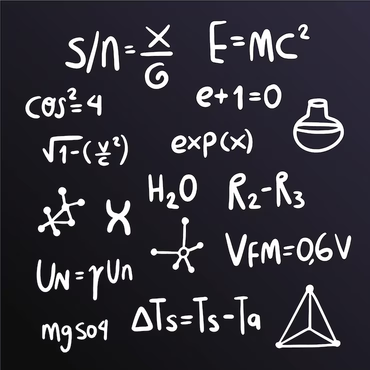

On són els Extraterrestres?
Un Treball de Recerca sobre la Paradoxa de Fermi
INS Can Planas
Veure ApartatsApartats

Equació de Drake
Fórmula matemàtica per estimar quantes civilitzacions extraterrestres intel·ligents i comunicatives podrien existir a la nostra galàxia.
AccedirIntroducció a la Paradoxa
Plantejament del conflicte central entre les altes probabilitats de vida a l'Univers i la total absència de proves o contacte.
AccedirHipòtesis
Possibles respostes i teories científiques que intenten resoldre el misteri de per què encara no hem trobat vida alienígena.
Accedir